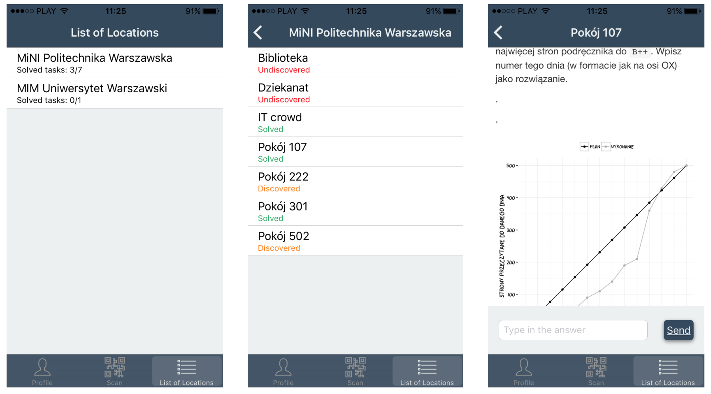

Gra edukacyjna BetaBit
Celem gry jest rozwiązanie wszystkich zagadek statystycznych poukrywanych w budynku.
Aby grać musisz znaleźć budynek, w którym rozmieszczone są kody dla kolejnych zadań. Obecnie są to budynki Wydziału Matematyki i Informatyki Uniwersytetu Warszawskiego (Banacha 2, Warszawa) i Politechniki Warszawskiej (Koszykowa 75, Warszawa).
W każdym z tych budynków znajdują się kody QR oznaczone logo gry. Znajdź te kody. W aplikacji znajdziesz podpowiedzi przy których pokojach znajdują się które kody.
Zeskanuj kod QR aby dotrzeć do treści zadań. Wpisz do aplikacji rozwiązanie a otrzymasz natychmiast odpowiedź czy jest ono poprawne czy nie.
Aby korzystać z aplikacji potrzebujesz dostępu do Internetu.
Zaloguj się do aplikacji z użyciem konta Facebook lub GooglePlus. Dzięki temu aplikacja zapamięta, które zadania już odnalazłeś/aś i które już rozwiązałeś/aś.

Dla osób które jako pierwsze odnajdą i rozwiążą przynajmniej 6 zadań przewidzieliśmy nagrody.
Więcej informacji o grze znajdziesz na stronie projektu http://betabit.wiki.